Akira
Founder & Head Chef
Membawa pengalaman lebih dari 15 tahun di dapur bintang Michelin di Tokyo dan Paris. Akira adalah visioner di balik menu inovatif Wikara yang memadukan teknik presisi dengan bahan organik lokal.

Lahir dari dedikasi mendalam terhadap seni kuliner. Kami percaya bahwa setiap elemen dari alam memiliki cerita, dan melalui Wikara, kami merangkai cerita tersebut menjadi harmoni rasa di atas meja Anda.
Founder & Head Chef
Membawa pengalaman lebih dari 15 tahun di dapur bintang Michelin di Tokyo dan Paris. Akira adalah visioner di balik menu inovatif Wikara yang memadukan teknik presisi dengan bahan organik lokal.

Co-Founder & Sommelier
Pakar kurasi anggur yang memastikan setiap tegukan melengkapi simfoni rasa hidangan kami. Ryuki merancang suasana dan pelayanan untuk memberikan standar keramahtamahan tertinggi.

Chief Operating Officer
Mengatur setiap detak operasional restoran dari layar balik. Dengan latar belakang manajemen perhotelan global, Rara memastikan sistem berjalan tanpa cela agar chef dan sommelier dapat fokus menciptakan karya seni mereka.